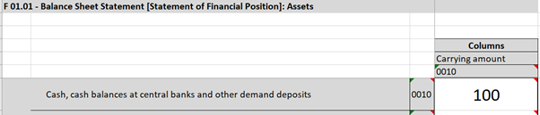
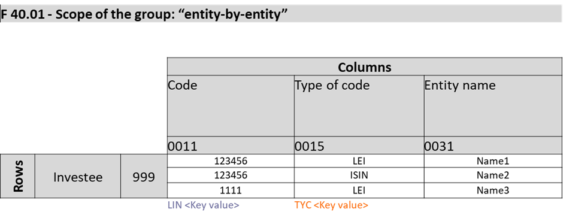
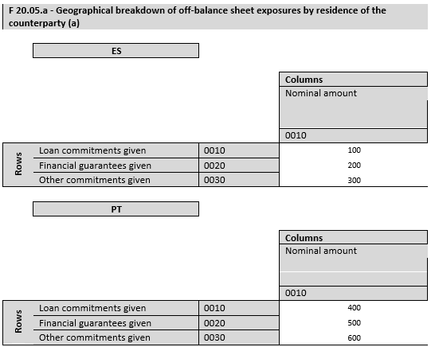

2 Information Model¶
2.1 Operations¶
The DPM Operations serve to write Scripts, which are computer programs that constitute a run-time and are composed of Operations.
Operations are expressions that use input Operands and/or Operators to produce a result.
Expressions are finite combinations of symbols that are well-formed according to the syntactical rules of the language. Expressions compose some Operands in a certain order by means of the Operators of the language, to obtain the desired result. The symbols of the expression designate Operators, Operands, and the order of application of the Operators.
Operators specify a type of operation to be performed on some input Operands (exceptionally, there may be Operators that do not take Operands as input, e.g., an Operator to get the current time) to generate an output. The output produced by one Operator may be used as input for another Operator (i.e., Operators can be nested).
Operands are specific artifacts from the DPM Expression Language referenced in an expression as input.
The result produced by an Operation is also a specific artifact from the DPM Expression Language.
2.2 Language Artifacts¶
DPM Expression Language calculations can operate on and generate as results three different types of Artifacts.
2.2.1 Scalars¶
Scalars are individual values of a certain Data Type.
2.2.2 Scalar Sets¶
Scalar Sets are sets of Scalar values defined on the same Data Type. They are unordered and contain no duplicates. Scalar Sets are used with the in Operator, can be derived from a Component of a Recordset and combined through the Set Operators (see §13), and their cardinality is obtained with the count Operator.
2.2.3 Recordsets¶
Recordsets are collections of Records that share a same Structure. Technically, Recordsets are two-dimensional labelled data structures (tabular), which can be assimilated to Relational Tables or Data Frames. The columns (fields) of the Recordset are provided by the Components of its Structure. The rows of the Recordset are its composing Records.
The Structure of the Recordset is a collection of Components, which can have one of three roles: Key, Fact or Attribute. Each Component has a name, which must be unique within the Recordset. Key, Fact and Attribute Components are each defined on a single Data Type. For Fact Components, the Data Type is determined by the Data Type of the selected Variables, as described in §2.2.3.2.
Each Record of the Recordset is individually identified by the combination of the values for its Key Components.
A Recordset having no Key Components behaves like a Scalar.
A Recordset may have no records.
2.2.3.1 Key Components¶
Key Components may be Standard or DPM. Standard Key Components are different for DPM-ML and DPM-XL, although their behaviour is the same.
Standard Key Components are common to all the Recordsets, independently on how the Variables are defined in the DPM. For each Recordset, there may be 0 or 1 occurrence of each subtype of Standard Key Component.
2.2.3.1.1 Standard DPM-XL Key Components¶
- Row Key: Identifies the Row Ordinate from a Report Table where the selected Variable is located. Arises in Variable Set Selections, when more than one Row for one Report Table is selected. The name for the Component is "r". It is defined on the String Data Type.
- Column Key: Identifies the Column Ordinate from a Report Table where the selected Variable is located. Arises in Variable Set Selections, when more than one Column for one Report Table is selected. The name for the Component is "c". It is defined on the String Data Type.
- Sheet Key: Identifies the Sheet Ordinate from a Report Table where the selected Variable is located. Arises in Variable Set Selections, when more than one Sheet for one Report Table is selected. The name for the Component is "s". It is defined on the String Data Type.
2.2.3.1.2 Standard DPM-ML Key Components¶
Regarding the DPM-ML, the Standard Components are three indexes, which do not represent any DPM object. They just serve to make sure that the right Variables are matched together when used with an Operator. The names for these Components are "x", "y" and "z". Note that these indexes do not necessarily correspond to rows, columns, and sheets. During the conversion from DPM-XL, the values of the indexes for each Variable shall be provided according to algorithms.
2.2.3.1.3 DPM Key Components¶
DPM Key Components are specific to how data is defined in the DPM. Arise when Open Variables are selected, and a Recordset will have one DPM Key Component per each Key Variable associated to the selected Variables.
The name for the DPM Key Components is the Code of the Property associated to the DPM Key Variable.
2.2.3.1.4 Contextual Key Components¶
There are two contextual dimensions that are always latent in every Recordset:
- refPeriod: Identifies the reference period of the data. It is defined on the Date Data Type.
- entityID: Identifies the reporting entity. It is defined on the String Data Type.
At compile-time, refPeriod and entityID are assumed to always exist, so they can always be referenced in expressions (e.g., as the var parameter in time_shift). At runtime, whether they effectively act as Key Components depends on the input data: if the data contains multiple reference periods or entities, they become distinguishing dimensions in the Recordset.
Being Key Components, refPeriod and entityID always have a value: a Record belonging to no reference period or to no entity cannot exist. The same contextual pattern applies to a set of Attribute Components, which are nullable instead; these are described in section 2.2.3.3.1.
A Scalar in DPM-XL is a Recordset with no Key Components other than the contextual ones. Within each instance (i.e., for each combination of refPeriod and entityID), it behaves as a single value. Therefore, "scalar" means "one value per instance", which is the only meaningful scope for a calculation.
2.2.3.2 Fact Component¶
A Recordset has one mandatory, and only one, Fact Component. The name for the Component is "f". Its Data Type depends on the Data Type of the selected Variables.
When a selection includes Variables of the same Data Type, the Fact Component has that Data Type. When a selection includes Variables of different Data Types, the Data Type of the Fact Component is the maximum common Data Type, determined by applying implicit casting (see section 2.3.2). The implicit casting hierarchy is as follows:
- Integer → Number → String
- Date → String
- Boolean → String
- Item → String
- Subcategory → String
The maximum common Data Type is the most specific type to which all the selected Variables can be implicitly cast. For example, if a selection includes Integer and Number Variables, the Fact Component has Data Type Number. If a selection includes Number and Boolean Variables, the Fact Component has Data Type String.
Selections resulting in implicit casting to a common Data Type should raise a warning, as the casting may cause a loss of operational capability (e.g., a Recordset cast to String cannot be used with arithmetic Operators).
If a DPM Key Variable is selected, the resulting Recordset will have the values for that Variable in the Fact Component, on top of having them in their corresponding Key Component. See example in section 2.2.4.4.
2.2.3.3 Attribute Components¶
Attribute Components provide additional information to the Fact value.
Attribute Components may be DPM or Contextual. Unlike Key Components, Attribute Components are nullable: they describe the Fact, they do not identify the Record.
DPM Attribute Components are specific to how data is defined in the DPM. Arise when a Variable with associated Attribute Variable is selected. A Recordset will have one DPM Attribute Component per each Property or Metric associated to any Attribute Variable associated to the selected Variables.
The name for the DPM Attribute Components is the Code of the Property associated to the DPM Attribute Variable.
2.2.3.3.1 Contextual Attribute Components¶
Besides those arising from the DPM, there are several contextual Attribute Components that are always latent in every Recordset. They follow the same pattern as the contextual Key Components of section 2.2.3.1.4: they are carried by the instance rather than by the individual Record, so no selection declares them, and within a single instance every Record shares the same value.
The contextual Attribute Components are:
| Component | Data Type | Meaning |
|---|---|---|
baseCurrency |
Item | The reporting currency of the instance. |
decimalsInteger |
Integer | The declared precision of Integer Facts (DPM data type i). |
decimalsMonetary |
Integer | The declared precision of monetary Facts (DPM data type m). |
decimalsPercentage |
Integer | The declared precision of percentage Facts (DPM data type p). |
decimalsDecimal |
Integer | The declared precision of plain Number Facts (DPM data type r). |
At compile-time, these Attribute Components are assumed to always exist, so they can always be referenced in any expression that takes a Component as input (e.g., in the condition of where, or as the component parameter of get). At runtime, a contextual Attribute Component is added to the data structure of the Recordset only where an expression references it; where no expression references it, it need not be loaded.
Being Attribute Components, they are nullable, and this is where their treatment differs from that of the contextual Key Components. A contextual Key Component always has a value, because a Record belonging to no reference period or to no entity cannot exist. A contextual Attribute Component only describes the Fact, and may be absent: where the instance declares no value for one of them, the Component takes the value null, which propagates according to the null semantics of part 4.
Within a single instance, a contextual Attribute Component carries one value repeated across every Record. Where the Recordset spans several instances, i.e., several combinations of refPeriod and entityID, the value may vary from Record to Record, exactly as refPeriod and entityID do.
The decimals Components give the declared precision of the reported Fact, one per numeric DPM data type (see section 2.3.1), following the convention that a negative value denotes precision to the left of the decimal point: -3 means the value is accurate to thousands. They are the source of the precision used to derive the radius of a Number treated as an interval (see section 2.3), where interval arithmetics is requested. The precision is a property of the instance and is not overridden per Fact.
Some examples:
{tF_01.01}[where baseCurrency = [eba_CU:EUR]]restricts the Recordset to the Records belonging to instances reported in euro. Evaluated over a single instance, this keeps either every Record or none.{tM_01.01}[where decimalsMonetary >= -3]keeps the monetary Facts reported at least to thousands precision.{tF_01.01}[get baseCurrency]promotes the reporting currency into the Fact Component, so that it can be compared or aggregated.
2.2.4 Examples¶
Recordsets arise from Open Variable selections or from selection of multiple Variables.
2.2.4.1 Closed Variable Selection¶
For instance, taking as an example EBA's Table F 01.01:

In the context of a single instance (i.e., disregarding the "refPeriod" and the "entityID"), selects a Recordset without Key Components, which works as a Scalar with value 100.
In the context of data with multiple dates and/or entities, and supposing that the data refer to the entity with code "id123" and to the date 31/12/2020, and that it has been reported with a 1 precision (attribute):
| entityID | refPeriod | f | p |
|---|---|---|---|
| id123 | 2020-12-31 | 100 | 1 |
2.2.4.2 Open Variable Selection¶

Selects an Open Variable. In this illustrative example, yields a Recordset with three Records. The Recordset, in the context of a single instance, has two DPM Key Components, because the selected Variable (the one rendered in Column 0031 of Report Table F 40.01) is associated in the DPM to a Key with two Key Variables. These Key Variables are associated to Properties with codes "LIN" (rendered in Column 0011) and "TYC" (rendered in Column 0015).
The following table represents the Recordset:
| LIN | TYC | f |
|---|---|---|
| 123456 | LEI | Name 1 |
| 123456 | ISIN | Name 2 |
| 1111 | LEI | Name 3 |
2.2.4.3 Variable Set Selection¶

This case selects a set of Variables because the selection includes more than one Row. This implies that the Row Key Component applies to this Recordset. Besides, the selected Variables are associated to a Key with a single Key Variable, which is associated to a property with code "RCP".
| RCP | r | f |
|---|---|---|
| ES | 0020 | 200 |
| ES | 0030 | 300 |
| PT | 0020 | 500 |
| PT | 0030 | 600 |
In this case, the Recordset for the DPM-ML would be slightly different because of the change in the Standard Key Component. Instead of the row, we would have any of the three indexes. For instance, using the x index:
| RCP | x | f |
|---|---|---|
| ES | 1 | 200 |
| ES | 2 | 300 |
| PT | 1 | 500 |
| PT | 2 | 600 |
Note that the important thing for DPM-ML to be consistent is that all the Records with the same row share the same index.
2.2.4.4 Key Variable Selection¶

Selects an Open Key Variable. The Recordset, in the context of a single instance, has two DPM Key Components, because the selected Variable (the one rendered in Column 0015 of Report Table F 40.01) is associated in the DPM to a Key with two Key Variables (in fact, it is part of the Key). These Key Variables are associated to Properties with codes "LIN" (rendered in Column 0011) and "TYC" (rendered in Column 0015).
The following table represents the Recordset:
| LIN | TYC | f |
|---|---|---|
| 123456 | LEI | LEI |
| 123456 | ISIN | ISIN |
| 1111 | LEI | LEI |
Note that the resulting Recordset has the values for the type of code two times, one as Key Component and another as Fact Component. This is necessary to allow doing calculations on the Fact while keeping all the Records in the Recordset uniquely identified.
2.3 Data Types¶
DPM Operations data types are defined with the principle: Create only a data type if they have different behaviour to other data types with at least one Operator.
The data types are:
- String: Sequence of alphanumeric characters of any length.
- Number: Is a rational number of any magnitude and precision, also used as approximation of a real number. Numbers can be treated as points or as intervals. Intervals are defined as a centre plus and minus a radius (c ± r). The centre is the input value provided. The radius is calculated based on the precision of the number as
10⁻ᵖ/2. This specification does not mandate a specific representation standard for numbers. The choice of representation (e.g., IEEE 754 binary or decimal floating-point, arbitrary-precision decimals) is left to implementers, who should balance precision, performance, and the requirements of their technology stack. - Integer: Positive and negative integer numbers and zero. It Is a subtype of the type Number. As Number subtypes, Integers can be treated as intervals.
- Date: Represents a time reference following ISO 8601, written as a specific date (e.g.,
#2022-01-15#). - Boolean: denotes a logical binary state, meaning either
trueorfalse. - Category items: A reference to the code of a Category Item.
2.3.1 Correspondences with DPM Data Types¶
The DPM provides a wider list of data types. This is because greater granularity in the data typology may be useful for reporting or representation purposes (e.g., a monetary amount requires a currency attribute, while a pure number does not).
For each DPM data type there is one, and only one DPM-XL Data type.
| Code | Name | DPM-XL type |
|---|---|---|
| i | integer | Integer |
| r | decimal | Number |
| s | string (non empty) | String |
| b | boolean | Boolean |
| t | true | Boolean |
| dt | date time | Date |
| d | date | Date |
| e | enumeration | Category Items |
| m | monetary | Number |
| p | percentage | Number |
| u | URI | String |
| o | ordinals | Integer |
| es | string (including empty string) | String |
2.3.2 Casting¶
The casting between data types is possible. Casting can be done explicitly, if the cast Operator is used, or implicitly when it is allowed. The following table contains all the casting options.
| String | Number | Integer | Date | Boolean | Item | Subcategory | |
|---|---|---|---|---|---|---|---|
| String | Explicit | Explicit | Explicit | Explicit | Explicit | Explicit | |
| Number | Implicit | Explicit | Not possible | Not possible | Not possible | Not possible | |
| Integer | Implicit | Implicit | Not possible | Not possible | Not possible | Not possible | |
| Date | Implicit | Not possible | Not possible | Not possible | Not possible | Not possible | |
| Boolean | Implicit | Not possible | Not possible | Not possible | Not possible | Not possible | |
| Item | Implicit | Not possible | Not possible | Not possible | Not possible | Not possible | |
| Subcategory | Implicit | Not possible | Not possible | Not possible | Not possible | Not possible |
Although the Integer → Date cast is marked Not possible, a Date can be built from three Integers using the date(year, month, day) Operator (see §10.3). Conversely, individual Integer components of a Date can be obtained with the extraction Operators in §10.2.
2.4 Language Conventions¶
2.4.1 Case Sensitivity¶
DPM-XL keywords are lowercase. The keywords listed in this specification (e.g., if, then, sum, where) must be written in lowercase as defined in the grammar.
Identifiers (table codes, property codes, operation names) are case insensitive: CNT, cnt, and Cnt refer to the same identifier.
2.4.2 Conventions to Write Scalars¶
To the effects of DPM-XL, when writing Scalars, the following conventions should be followed:
- String: Between double quotes ("this is a string") or single quotes ('this is also a string'). Empty strings are represented as
""or''. An empty string is a distinct String value and is not equivalent tonull. - Number: Sequence of numeric digits. Dot (".") shall be used to separate the decimal and the integer part.
- Integer: Sequence of numeric digits.
- Percent: Written as an integer or decimal followed by
%(e.g.,25%,0.5%). A percent literal is stored as a Number equal to the written value divided by 100:25%is equivalent to0.25. There is no distinct Percent type. - Date: Written between hashes (#), following ISO 8601. Example:
#2021-11-25#. - Boolean: true or false.
- Items: An item signature between square brackets, in the format [namespace:code]. E.g., [eba_RT:x11], [eba_CU:iso_currencies]. Item signatures are assumed to be unique within a given DPM release.
2.4.3 Reserved Words¶
The following words are reserved in DPM-XL and cannot be used as identifiers unless escaped:
Logical operators: true, false, and, or, xor, not
Arithmetic and numeric operators: abs, exp, ln, sqrt, power, log, max, min
Aggregate operators: max_aggr, min_aggr, sum, count, avg, median, rank
Analytical (windowing) keywords: over, partition by, order by, asc, desc, data points, range, between, unbounded (reserved within the over clause)
Comparison and set operators: match, isnull, in
Set operators: set_of, union, intersect, setdiff, symdiff
Conditional operators: if, endif, then, else, nvl, filter
Clause operators: where, get, rename, to, sub, group by
Selection and assignment: with, null
Time operators: time_shift, annualise, year, semester, quarter, month, week, day, date
String operators: len
Time period codes: A, S, Q, M, W, D
Contextual identifiers: refPeriod and entityID (contextual Key Components, see section 2.2.3.1.4) and baseCurrency, decimalsInteger, decimalsMonetary, decimalsPercentage and decimalsDecimal (contextual Attribute Components, see section 2.2.3.3.1) are reserved identifiers with special meaning. They cannot be used as regular property codes or operation names.
Selection mode keywords: interval, default, the Parameter Selection scalar type names number, integer, string, date, boolean, item, and the set type names set-number, set-integer, set-string, set-date, set-boolean, set-item are reserved within selection expressions (inside {}). Outside selections, these words have no reserved meaning.
Selection prefixes: The single letters t, g, r, c, s, v, o, p are reserved as selection prefixes (table, table group, row, column, sheet, variable, operation, parameter) at the start of an identifier inside {}. An optional underscore between the prefix and the code is allowed as a cosmetic separator (tT1 ≡ t_T1). Codes that themselves start with an underscore are addressed by backtick-escaping the code, e.g. t`_meta`.
2.4.4 Escaping Reserved Words¶
If a DPM identifier (e.g., a property code or table code) conflicts with a reserved word, it can be escaped using backticks. For example, if a property is named sum, it can be referenced as `sum` to distinguish it from the sum operator.
Escaped identifiers are case sensitive: `Sum` and `sum` refer to different identifiers.